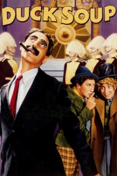

Duck Soup (1933)


War is swell...when the Marx Brothers are in it. They'll be out of the trenches by Christmas...if the food doesn't improve!

Country:United States, 68 minutes
Spoken languages:English
Genres:Comedy, War
Director(s):Leo McCarey
Writer(s):Harry Ruby, Nat Perrin, Bert Kalmar, Arthur Sheekman
Video Codec:Unknown
Number: 6373
IMDb Rating:

Certification:
Storyline:
Rufus T. Firefly is named president/dictator of bankrupt Freedonia and declares war on neighboring Sylvania over the love of wealthy Mrs. Teasdale.
Cast:
Groucho Marx (as Rufus T. Firefly), Harpo Marx (as Pinky), Chico Marx (as Chicolini), Zeppo Marx (as Bob Roland), Margaret Dumont (as Gloria Teasdale)
Medium: Media file,
Location: D:\Marx Brothers\1933 Marx Brothers Duck Soup.mp4
Loaned: No
Aspect ratio: Unknown